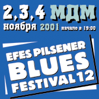

12th Efes Pilsener Blues Festival
Официальный пресс-релиз фестиваля.
ВНИМАНИЮ ВСЕХ СТРАЖДУЩИХ! EFES PILSENER BLUES FESTIVAL 12 СНОВА В РОССИИ!

Надо сказать, что Россия принимает у себя элиту американского блюза уже третий год подряд. Ведь Efes Pilsener Blues Festival, традиционно проводящийся в разных европейских странах накануне ноябрьских праздников, каждый раз представляет музыкальному сообществу самые интересные и актуальные блюзовые коллективы. Так, за прошедшие два года свои программы на суд наших зрителей вынесли легендарные Eddy "The Chief" Clearwater, The Holmes Brothers, Long John Hunter, Bobby Rush, Chris Thomas King, Lil’ Brian & The Zydeco Travelers.
Сказать, что Efes Pilsener Blues Festival повсеместно пользуется огромным успехом - значит не сказать ничего. За всю 12-летнюю историю проведения, его организаторы не помнят ни одного концерта, который случился бы без переаншлага. И это не удивительно, ведь мало кто может похвастаться такой свободной, расслабленной, а главное - позитивной атмосферой: несколько часов драйвовой музыки, сотни литров любимого пива, множество старых друзей и единомышленников. Одним словом, никто из тех, кто хоть однажды оказался на этом фестивале, не сможет устоять перед искушением, вновь окунуться в океан страстей, бушующих в каждом блюзовом квадрате на Efes Pilsener Blues Festival .
В этом году организаторы Efes Pilsener Blues Festival 12 сделали ставку на новое поколение блюзменов и приготовили для поклонников корневой американской музыки несколько прекрасных выступлений, в том числе:
EDDIE "KING" MILTON - один из самых легендарных блюзовых музыкантов. Он начинал еще в сороковые годы, когда вместе со своей сестрой исполнял госпел. Повзрослев, Эдди стал одной из самых ярких надежд нового поколения американского блюза. Творческая судьба свела его с такими корифеями как Мадди Уотерс и Сонни Бой Уильямсон. Его гитарное мастерство просто завораживало и приводило в неистовство настоящих любителей блюза. Музыкант много путешествовал с концертными турами по стране, ни одна блюзовая площадка, начиная с Аляски и заканчивая югом Штатов, не осталась без внимания мистера Милтона. Последние годы он очень плодотворно сотрудничал с Коко Тейлор. И вот, выпустил новый альбом "Another Cow Dead", который был признан критиками одним из лучших блюзовых альбомов последнего десятилетия.
OTIS TAYLOR -блюзмен, признан многими американскими музыкальными критиками "голосом американской блюзовой истории". Его мощь заключается не только в исключительном композиторском таланте, но и в мастерстве владения банджо, гитарой и губной гармошкой. Его последний диск "White American", выпущенный в 2000 г., вызывает искреннее восхищение, как меломанов, так и профессионалов.
"Судя по всему, Дэнверский музыкант записал лучшую блюзовую пластинку года. Его группа неожиданно преподнесла миру тот самый оригинальный блюзовый звук, который в наши дни практически уже и не встретишь… Медленный, мрачноватый, но совершенно гипнотизирующий, глубокий "грув". "White African" - действительно великий альбом", - пишет "Albuquerque Journal".
"Это глубокая музыка, вышедшая из рук исполнителя просто гениального уровня. Тэйлор воспринимает афро-американское культурное наследие очень серьезно. А еще, блюзы Отиса не только развлекают вас или доставляют вам эстетическое удовольствие, но и могут научить вас многому. Его песни - это лаконичные, серьезные послания, упакованные в запоминающуюся, мелодичную обертку", - пишет Real Blues Magazine.
MICHAEL HILL - нью-йоркский музыкант, настоящий корифей блюза. Своим восхищением от его живого исполнения с вами может поделиться любой из тысяч людей, присутствовавших на концерте под сильнейшей грозой во время Чикагского Блюзового Фестиваля: Майкл Хилл стоял под раскатами грома, среди молодых афро-американских музыкантов, и всем своим видом показывал, что блюз будет всегда.
Даже строгие критики отмечают неординарный талант этого артиста, называя его музыкантом, делающим музыку 21 века. «Майкл Хилл - один из самых ярких блюзменов своего поколения, - пишет «Филадельфия Дейли Ньюс» - Его музыка распространяет энергию вокруг себя, и придает блюзу новое значение, направление и звучание». Его музыка - это смесь традиционного блюза с роком, ритм-н-блюзом, фанком, регги. Отголоски всех этих стилей осмыслены и поэтому очень органичны в его музыкальном звучании. Майкл Хилл умеет зажечь любую аудиторию, установить с ней теснейший контакт. «Нет ничего страшного, что мы уходим от очень серьезного блюза. Ведь музыка, прежде всего, должна доставлять людям радость и удовольствие. Поэтому наши шоу - это всегда праздник. Мы должны показать все, на что мы способны, а народ должен хорошо провести время».
Справки и заказ билетов с доставкой в Москве - тел: 263 4360, в Санкт-Петербурге: - тел: 119 5625.
Организатор Сайленс Про, в Санкт-Петербурге в содружестве с SP-концерт.